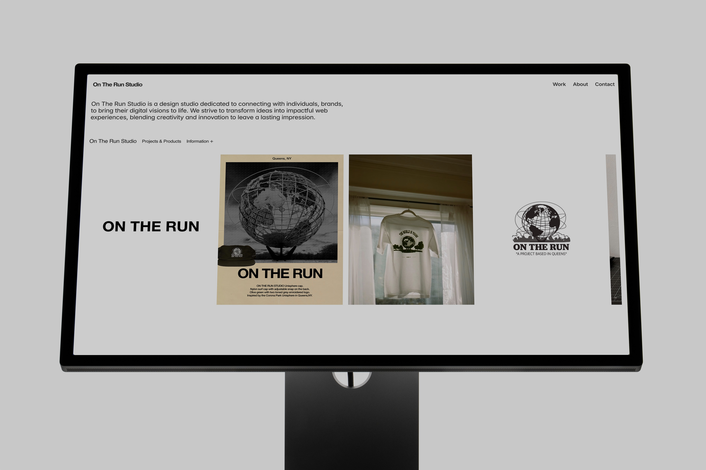

On The Run Studio
Creating a brand and a Design Studio

Overview
On The Run Studio is a personal project, it began as a source to curate and share images that inspired me and my work. Overtime, the page began to grow and build a community of like-minded individuals who were also getting inspired by the posts. Along the way I developed projects designed and inspired by some the images I had curated and through my childhood. On The Run Studio will still aim to share, inspire, and grow the community while connecting with creatives, brands, businesses to assist in Brand Development and Web Development.


Projects
On Oct 2022, I worked, designed, and produced the first project for On The Run Studio which consisted of a logo mug and 'The World is Yours' tee-shirt. The logo mug only consisted of the brands first variation of the logo, placed central of the mug in a teal/ green text color. The tee-shirt graphic was inspired by the Unisphere located in Flushing-Meadow Corona Park, Queens, NY and the title of the song 'The World is Yours' by Nas.
Following the release of the first project, I worked on the second project which included a graphic hoodie and an embroidered hat. The graphic hoodie had the Atlas centered around a more collegiate sweatshirt graphic design with the brand name on top. The hoodies were accompanied by the Unisphere hats in olive green and embroidered graphic. The hat design was inspired by the Unisphere located in Queens, NY, again. This project was released towards the end of May 2023.
Project 3, the latest project, was a re-release of the Unisphere caps but an addition of a new Navy hat color along with the original Olive hat color. The re-release of the Unisphere hats was accompanied with the Embroidered Logo Fleece Sweatpants in Navy and Black. Both products were released and available on December of 2023.